RACHITA KHETAN
ABOUT ME
I am 19 years old and so far I have lived in 6 countries, 9 cities and 3 continents.
Each of these places has shaped me as an individual and made me the creator I am today.
However, I believe Canada is the one place I grew the most as I came in as
an international student and had to figure life out by myself without my parents or any known soul.
Although this expanded my life skills, GBDA is the one that made me a designer, a creative thinker and a
marketer.
Throughout this website you will see and understand how each experience has led to the becoming of the
person on the right.

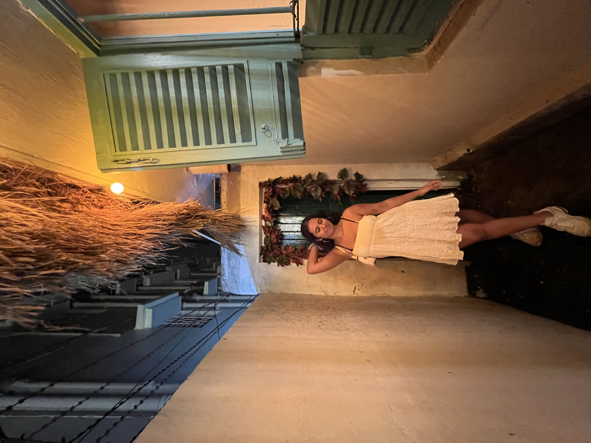
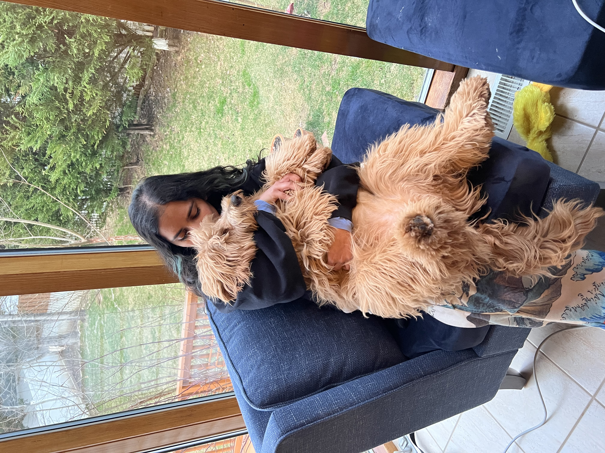

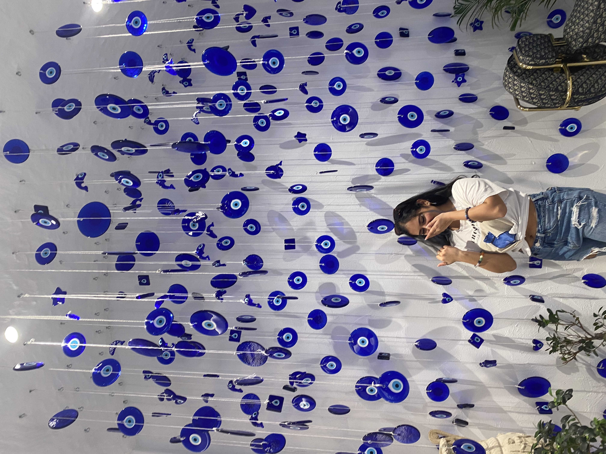
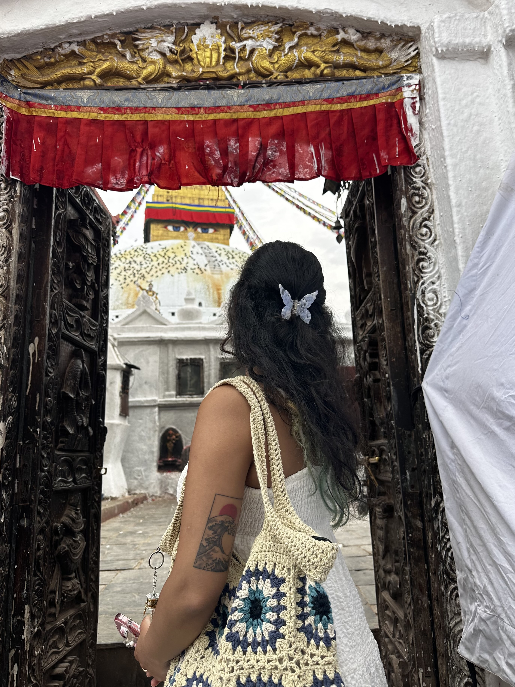
BACKGROUND
2003
INDIA
2018
UK
2020
DUBAI
2022
CANADA
2023
COSTA RICA & US
INDIA
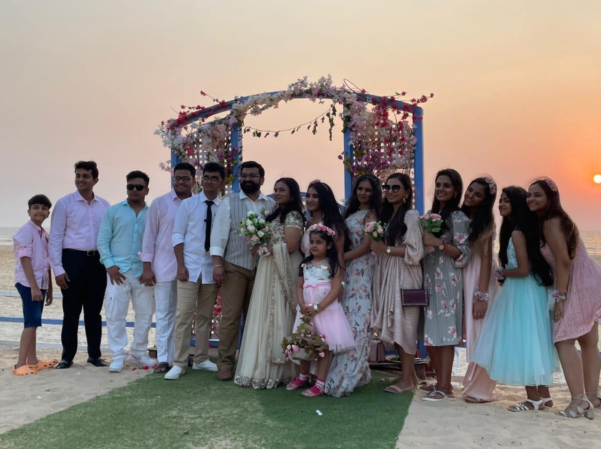
I was born in India, in a small village of Bihar. I wasn't there for long and moved to another state in
India called Chennai after just 2 months. Here I stayed for just a year until moving to yet another
state called Bangalore. This was the first and last place I stayed at for the longest period of 10
years. Since most of my upbringing took place here I often tell people I am from Bangalore even though I
really am from a multitude of places. After Bangalore we moved to Mumbai for 4 years. I spent a brief
amount of my teenage years here and so I do identfy mostly with Bombay, as this is the place I remeber
the most about. India to me is a place that is extremely rich in culture and colours. All of my current
creativity stems from here. I used to make cardboard slippers, clay diyas and go for numerous art
classes. I spent my entire childhood almost crafting products and selling them in small amrket stalls,
which has now become a huge part of me.
UK
I moved to the UK when I was 14 years old. I moved to small city called Bristol where I resided for 2
years. This was the first big move for me and my family. We often shifted houses and states due to my
father's job and this was the first move out of the country. We had to leave behind everything and
everyone we ever knew. It was a new place with new customs and nothing familiar. To make matters worse I
joined a private all girls high school, which was also predominantly white. Although these 2 years were
arguably the hardest and most uncomfrotable years, I did learn a lot through this experience. I learned
how to adapt, adjust and most mportantly how to be respectful of other people's cultures and customs. I
believe this shift made me mature a lot faster than my freinds back at home and little did I know this
was the first of many big moves to come.
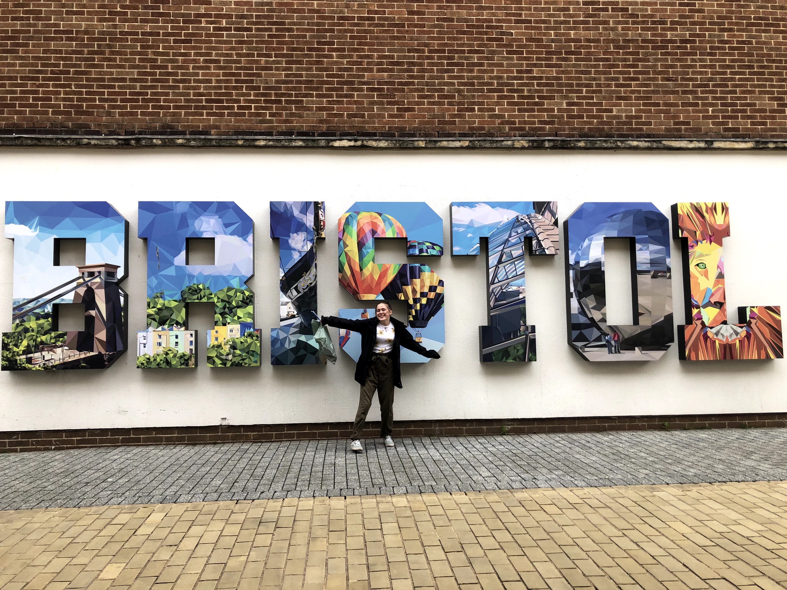
DUBAI

Dubai so far is my favourite place that we have moved in to. It showed me a whole new world and was an
astounding experience. I moved here when I was 16 years old in the middle of the pandemic. I started
11th grade but only 6 months later, I had to move into a boarding school in Bangalore to finish my high
school due to my father's job. However, I will say that this was a blessing in disguise as I finally got
to reconnect with all of my friends after 6 years and make the best of friends in my new school whom I
now call my family. While all of my friends once again resided in India, I had no friends to go back
home to until I met 3 other girls who had the same background as me in terms of the number of countries
we had lived in and one of them was in the same situation as me as she too was doing boarding school in
India. I think its fair to say that all factors combined and especially having found these girls, Dubai
turned out to be the best place I have lived in so far.
CANADA
I have grown the most as a person, an artist and as a business woman in Canada. This is solely due to
the fact that even though I have moved around my whole life and I have a lot of experince with adapting
to new cultures, this particular move was my own. My parents did not recieve their Canadian visa until
March 2023 and so I had to move into univeristy all by myself in the first year. I had never even
visited Canada before so this really was a big move especially given that my parents lived in Dubai at
the time. Luckily that wasn't the case and now 2 years into my life here I am proud of how far I have
come. Since my move, I have achieved my dream grades, put up a stall at the GBDA market fair and made an
amazing group of diverse friends whom I continue to learn from everyday.
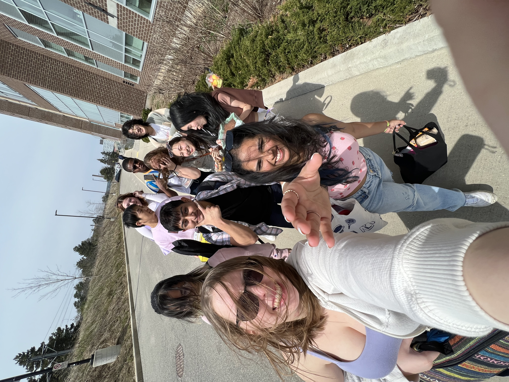
COSTA RICA
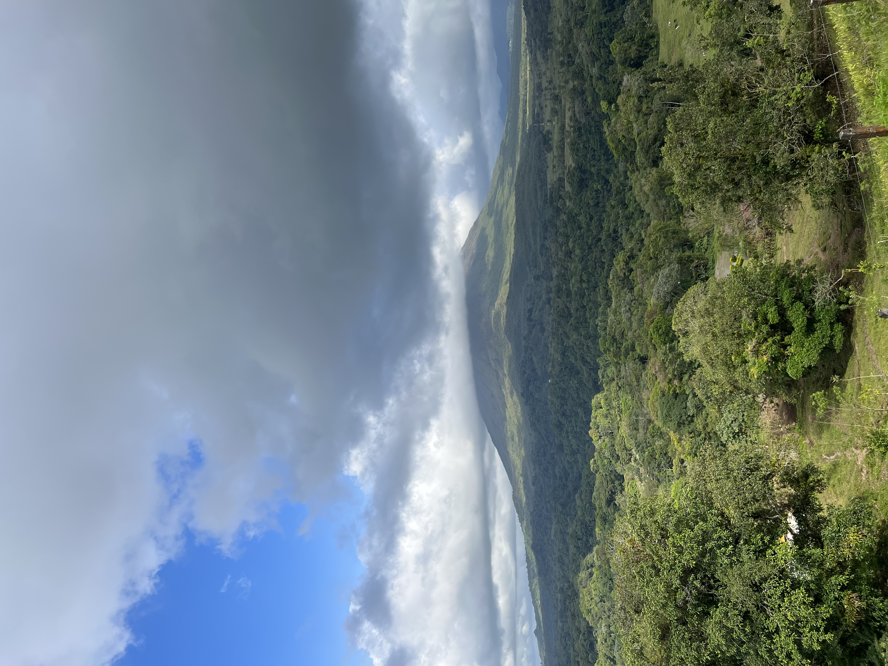
My parents recently moved to Costa Rica in the summer of 2023. At first, none of us were very keen on
this move especially my mother since it is a very different place from all the countries we have lived
in. We did not know the language at all as everyone only spoke spanish and very little english, the
culture was vastly different even more so than the western world and the place was very quiet. However,
it provided a certain level of peace and serenity and the greenest of greens I had ever seen. Even
though it was a struggle to adapt at first, I have now made some amazing friends and memories in Costa
Rica and it is my second favourite place that we have lived in so far right after Dubai. It really is a
once in a lifetime exerience to be living here and the Pura Vida lifestyle is just the cherry on top.
UNITED STATES
I had visited the US a couple of times before since my brother went to univeristy there and we had close
family residing there too, but never in a million years did I ever imagine that I will be living in the
states. It was like a dream come true and now that my parents live in Costa Rica and the US at the same
time it truly is like having the best of both worlds. I could not be more grateful to have had all these
experiences and to be able to go home more often now even though I am an international student. The US
has broadened my horizons in terms of job opportunities and just how much there is to learn in this
life.

BUSINESS
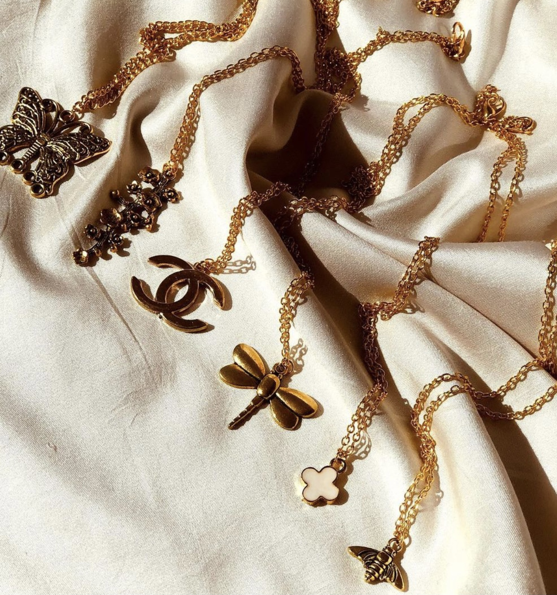
About the Business
It is a handmade jwellery business that runs online. I market my products on TikTok and
Instagram and I sell them via Instagram. The business has been up and running for around 3 years
however I did pause for a year as I being an international student I was unable to bring my
products with me. This year I finally brought all my products and ran my first physical stall in
university. I plan on expanding and continuing my business in Canada over the next few years.
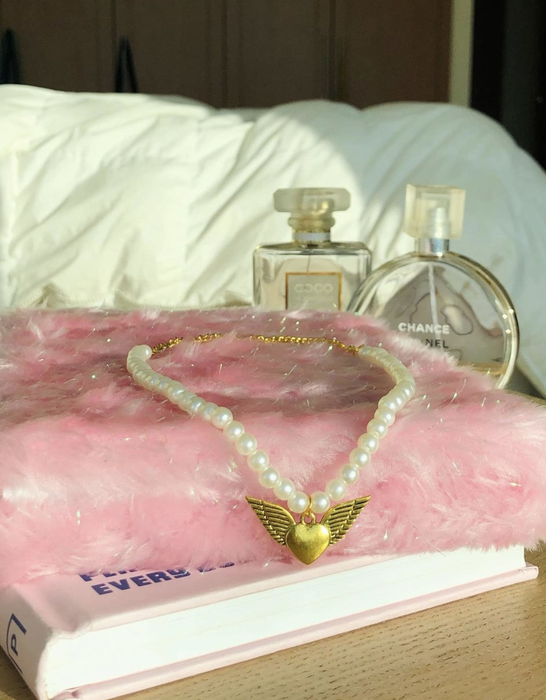
Why I Started
I started this business on 27th December 2020.I have always been a creative child and have also
sold some of my handmade items in market places ever since I was 9 years old. In 2020 however,
due to the uncertainty of my dad's job, I decided to help him out by starting my own business as
he is the only sole earner in my household and I believed that anything I can do no matter how
small, would help. I also wanted to support a good cause. So, whatever amount I make I donate
10% of it to charity.
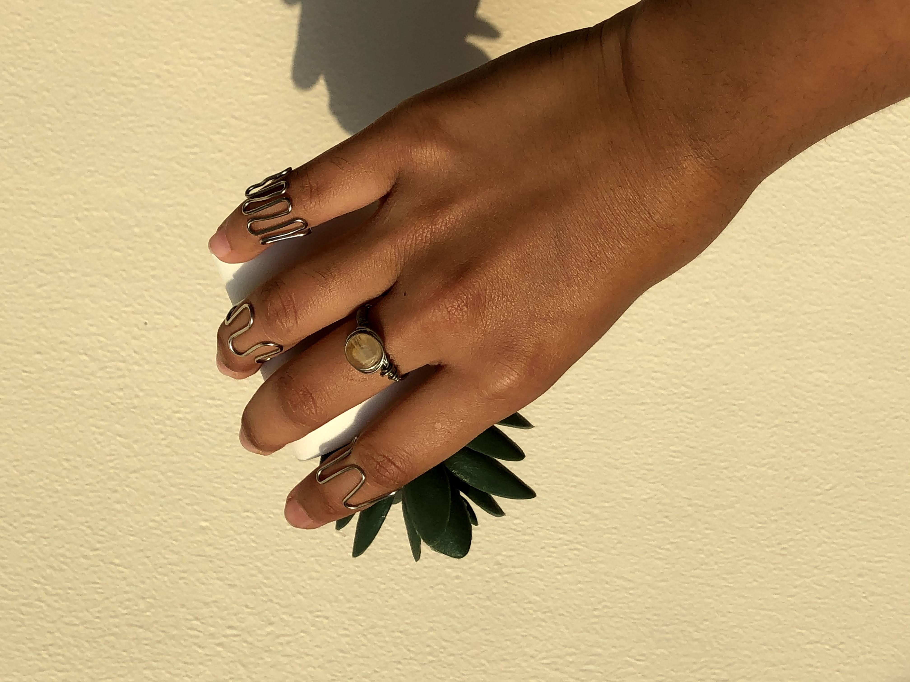
My Process
I always loved making jewellery in some form or the other, whether it was out of clay, using
beads, paper, plastic etc. As I grew older and saw all the small businesses on TikTok making
real jewellery, I decided to have a go at it and reserached for 2 weeks straight to source all
my materials. I finally made good quality pieces and also included items with my own touch to it
like wire rings and clay jewellery holders with fun designs. Because everything is handmade, I
decided to name the business handmadebyrachi.
Check Out My Store!